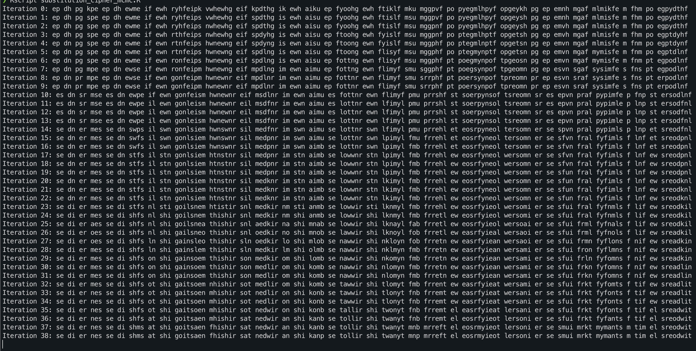
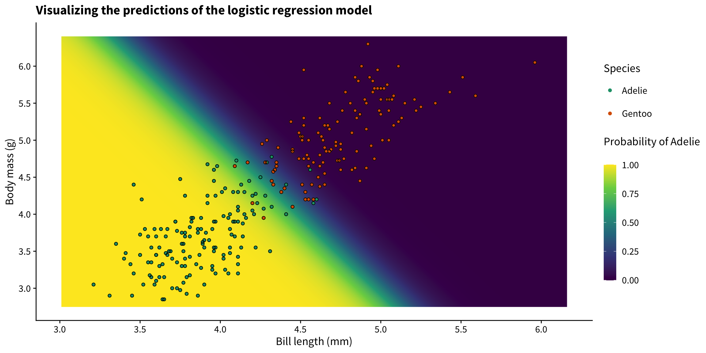
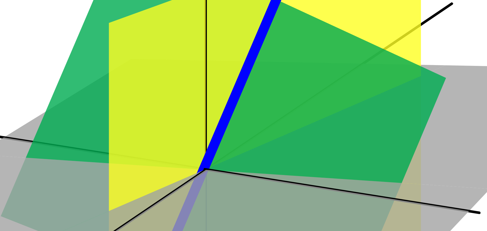
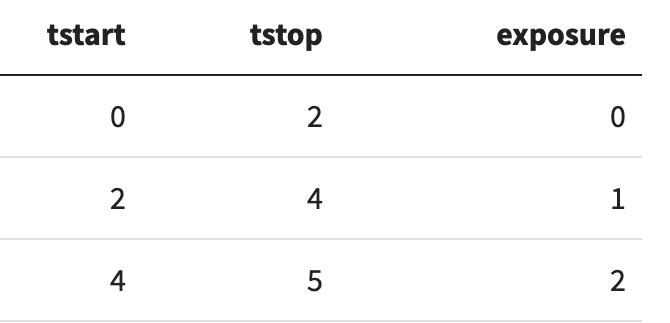
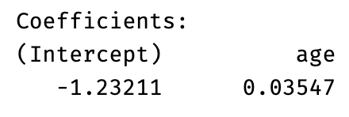
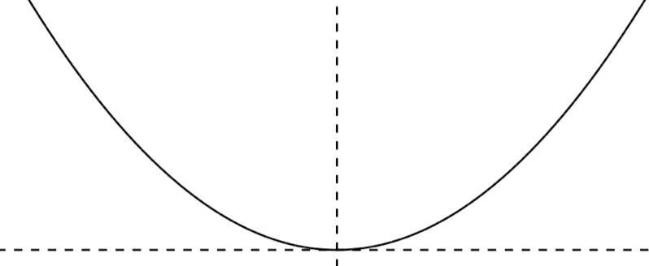
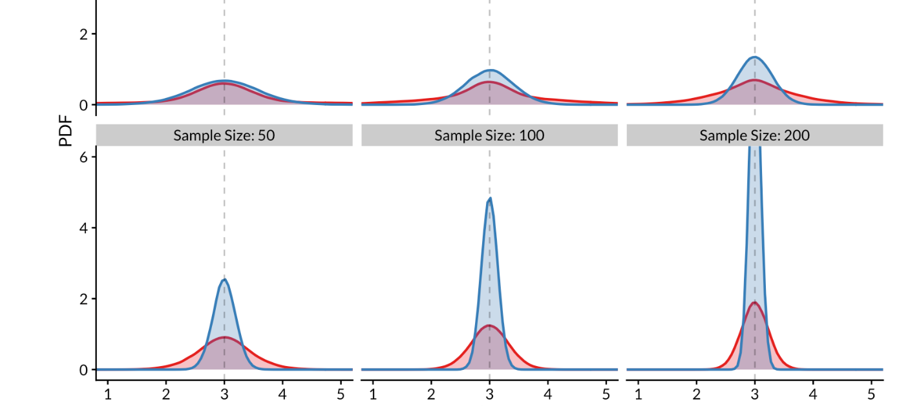
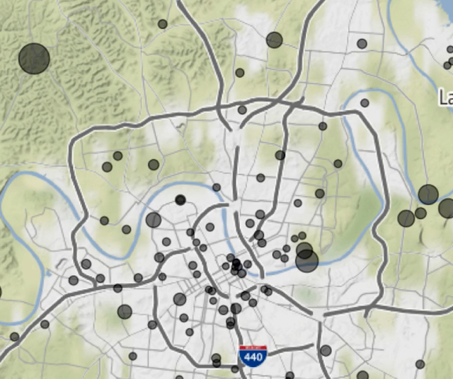
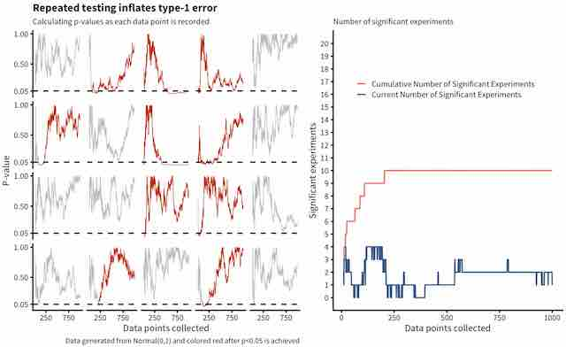
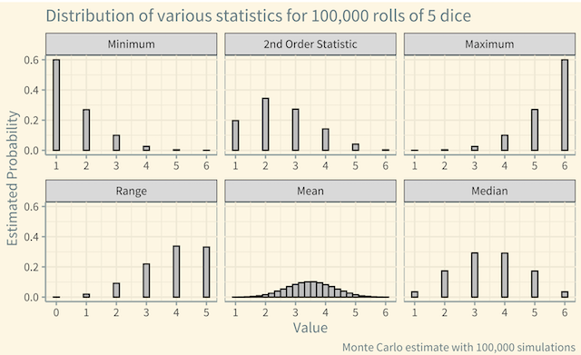

Max Rohde
Blog
About
Resume
Animations
Shiny Apps
Blog

Code-breaking with Markov Chain Monte Carlo (MCMC)
Using cryptography to demonstrate the power of MCMC techniques in computational statistics
Nov 10, 2022
Max Rohde

Logistic regression (by hand)
An in-depth dive into the workings of logistic regression.
May 11, 2022
Max Rohde

Linear Algebra / Matrix Operations in R
Informal notes about common linear algebra / matrix operations in R
Apr 29, 2022
Max Rohde

Using the tmerge() function to structure time-dependent covariates for survival analysis
The tmerge() function in the survival package is used to structure data to represent time-dependent variables in a survival analysis. This post shows a minimal example of how to use tmerge.
Mar 31, 2022
Max Rohde

Sensitivity of odds-ratios calculated on dichotomized variables to inclusion criteria
A short simulation example showing why dichomization of continuous variables can lead to wrong conclusions.
Jan 16, 2022
Max Rohde
Creating a bookdown book with the
bs4
theme
A short guide to creating a bookdown book using the
bs4
theme
Aug 10, 2021
Max Rohde

What is Gradient Descent? (Part I)
Exploring gradient descent using R and a minimal amount of mathematics
Jan 16, 2021
Max Rohde

Statistical simulation of robust estimators with tidyverse tools
Functions from the
tidyverse
provide a powerful way to do statistical simulations. We demonstrate this approach by evaluating the properties of the mean and median as estimators of center for two distributions.”
Jan 13, 2021
Max Rohde

Using
gganimate
to create cartographic animations
The
gganimate
package can be used with
ggmap
to create animations of geographic data. I show examples using data from Nashville Open Data.
Jan 6, 2021
Max Rohde

Repeated testing inflates type I error
Type I error is increased when you test your hypothesis multiple times during the data collection process. Simulations can provide a clear picture of this process.
Dec 23, 2020
Max Rohde

What is a statistic?
Exploring the idea of a statistic by simulating dice rolls in R
Dec 8, 2020
Max Rohde
No matching items